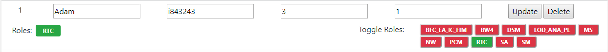

Click component to enable role. This will determine who shows up through component navigator when assigning incidents.
RED : DISABLED
GREEN : ENABLED
Click the component to add / remove user from component.
| Variables | Description | ------------- | -------------| | NAME | The user's first name | | I-NUMBER | The user's I-Number | | Threshold | The user's maxiumum amount of incidents assignable per day | | % Usage | The amount of time dedicated to incident handling per day. (0 to 1.0) |

To add a new user give the user a name and a I-Number. Remember to assign the user roles. Otherwise they will not show in the queue manager.